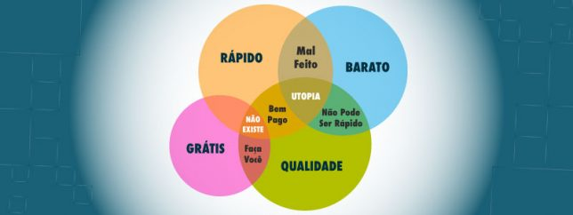
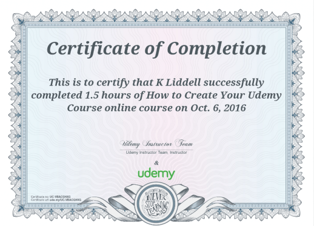

Porque você não deve usar a Udemy?
Blog ReviewCompartilhe esse post nas redes sociais...
Olá Homelabers!
Você costuma utilizar a plataforma de cursos online Udemy regularmente?
No post de hoje, vou descrever os motivos porque a plataforma Udemy não é boa para você e para seus estudos.
Antes de mais nada, para quem não conhece ou não está familiarizado com a Udemy, um rápido background da empresa.
A Udemy é bastante popular no Brasil e são grandes as chances de você já ter feito ou conhece alguém que fez algum curso na plataforma.
Existem diversas categorias - não somente TI - de cursos no site, como finanças, contabilidade, marketing, negócios, desenvolvimento pessoal, etc. A lista é ENORME.
O maior apelo da Udemy são os cursos grátis ou com um valor bastante baixo - o que acaba atraindo muitos alunos, sempre atrás daquele precinho baratinho. Mas o barato pode - e quase sempre sai - sair caro e eu vou te mostrar porque!
O título desse post era para ser Porque eu odeio a Udemy!, mas decidi mudar porque eu sempre digo aos meus filhos que odiar uma coisa não é um bom sentimento 😄
Então resolvi escrever sem sentimentos pessoais e mostrar minhas opiniões e o resultado da minha pesquisa. A ideia é evitar que você caia nas armadilhas e truques dessa empresa e no final ainda vai economizar uma graninha!
Há alguns dias eu postei no meu Linkedin e no meu Twitter (segue lá!!!):
E as resposta foram bastante diversas:
https://twitter.com/homelaber/status/1192094535586910211?s=20
Como funciona a Udemy?
Para quem quer estudar, basta fazer um simples cadastro e você já tem acesso a plataforma e a todo o seu catálogo de cursos. Depois basta escolher o seu curso, pagar - com boleto ou cartão de crédito e pronto!
Para quem quer ensinar, o processo também é bastante simples. Basta você se cadastrar como instrutor, fazer o cadastro do seu curso e depois o upload do material. Pronto! Você é um instrutor da Udemy.
O público alvo (ou a próxima vítima!) da Udemy
O público alvo da Udemy são em sua grande maioria, aquelas pessoas que estão entrando agora na área - e estão deslumbradas por esse maravilhoso mundo de TI - e que ainda não são calejadas o bastante para evitar cair nessas armadilhas.
Se esse é seu caso, continue lendo, se não, passe esse texto a diante!
Porque eu odeio acho que a Udemy não é uma boa opção de estudo?
Eu já posso até ouvir o pessoal reclamando:
* Ahhhh mas a informação deve ser gratis!
* Ahhhh mas eu já aprendi muita coisa na Udemy!
* Ahhhh mas tem muito curso bom e barato na Udemy!
Sim, eu sei de todos esses argumentos, mas eu vou dizer aqui, o porque EU acredito que essa plataforma acaba contribuindo da maneira errada para o aprendizado das pessoas, para o seu aprendizado e para o seu bolso!
Vem comigo e acompanhe meus pontos e no final, deixe a sua opinião! Eu quero muito conversar com vocês sobre esse assunto.
01. Os cursos da Udemy são grátis ou baratos demais.
Quem não gosta de coisas grátis? Todos nós, certo? Na minha opinião, cursos grátis ou baratos demais, podem ser eficientes para você se decidir se quer estudar tal assunto ou tópico, sem fazer um grande investimento.
Mas o grande problema aqui é que cursos grátis, em sua grande maioria tem um conteúdo apenas surperficial, o que acaba não sendo muito útil para quem buscar conhecimento.
Aquela velha máxima: Não existe almoço grátis - ou barato demais - cai como uma luva nesse caso.

02. Falta de uma curadoria séria no conteúdo dos cursos.
Esse para mim é uma das maiores razões porque eu não gosto da Udemy. A curadoria dos cursos é praticamente zero.
Qualquer pessoa, pode se cadastrar como instrutor e postar um conteúdo. Isso acaba levando para a plataforma uma quantidade enorme de conteúdo ruim.
Muitas pessoas, sem qualificação, sem conhecimento profundo, sem didática alguma, acabam oferecendo cursos na plataforma e quem acaba perdendo é aquela pessoa que busca conhecimento e acaba sendo enganado.
03. Descontos enormes.
A grande maioria dos cursos oferecidos na plataforma da Udemy, apresentam grandes descontos. Isso pela visão do aluno, pode ser uma coisa bacana, mas pelo lado de quem produz o conteúdo no final do dia acaba desmotivando a criação de um conteúdo realmente sério, bem produzido e de qualidade.
Faça essa pergunta a você mesmo: Porque um carro que em teoria vale 100.000 reais estaria sendo vendido por 29.000 ? Tem alguma coisa errada ai não? O mesmo vale para os cursos da Udemy. Um curso que no site custa 199,00 quase sempre será oferecido por 9,90. Isso acaba sendo totalmente inviável.
Nas minhas pesquisas para escrever esse post, encontrei diversos relatos de instrutores totalmente insatisfeitos com a plataforma por esse motivo, a Udemy “força” os preços para baixo e quem não concorda acaba não aparecendo no topo da lista e consequentemente não vendendo seu curso.
04. A barreira para se tornar um instrutor é muito baixa.
Seguindo a linha dos pontos acima, a barreira para se tornar um instrutor da Udemy é praticamente zero. Com isso, muitos curiosos e aproveitadores acabam entrando na plataforma, sem qualquer preparo.
05. Qualidade duvidosa dos cursos.
Não da para dizer que 100% dos cursos oferecidos na plataforma da Udemy são ruins, muito pelo contrário. Mas a grande maioria é RUIM! Fraco, raso e com conteúdo muito duvidoso, devido a todos os pontos acima.
Sem uma curadoria séria e com a barreira de entrada muito baixa, qualquer pessoa pode se cadastrar como instrutor, colocar um monte de buzzwords, um título bacana, mil promessas, custo baixíssimo e pronto! O estrago está feito.
Mais uma vez, quem geralmente busca conhecimento na Udemy, são pessoas que estão começando na área e na maioria das vezes, ainda não tem o discernimento de separar o joio do trigo.
Muitos cursos acabam deixando de lado a parte mais importante do ensino: Os conceitos. Os cursos já caem direto na “mão na massa” e acabam deixando de lado o ensino da fundação, dos porquês, dos conceitos. Isso é terrível e vai te prejudicar demais no seu aprendizado.
BONUS - Os certificados.
Ahhhh os certificados da Udemy! Esse talvez seja o ponto que mais me estressa em relação a tudo isso que já falei até agora.
Gente, pelo amor do nosso senhor! Parem de postar esses certificados de cursinho da Udemy e outros sites duvidosos em seu LinkedIn. Isso é ridículo e não tem nenhum valor!
Um “certificado” de um curso online, de qualidade duvidosa e com 4 horas de duração não vai agregar em NADA o seu CV! Muito pelo contrário, se quem estiver avaliando o seu CV for uma pessoa que sabe como as coisas funcionam, pode acontecer de você até perder uma oportunidade.
Então… de uma vez por todas, não faça mais isso!

Então eu não devo mais fazer nenhum curso da Udemy?
Calma la!
Depois de ler todos esses pontos, você já deve conseguir fazer um melhor julgamento da plataforma Udemy e poderá tirar suas conclusões sozinho.
Você deve pesquisar bastante para encontrar um curso que seja realmente bom e não um completo disperdício do seu tempo.
O apelo do preço baixo, sempre será um atrativo quase irresistível, mas você deve pesar entre comprar um curso barato que não vai te levar a lugar algum ou investir um pouco mais de dinheiro e obter um retorno do seu investimento. Tente mudar o mindset - mas outros cursos são caros!
Lembre-se, você está investindo no seu aprendizado! No seu futuro, não economize nisso. Se você economizar algumas cervejas por mês vai conseguir pagar um curso melhor e vai acabar aprendendo mais rápido e melhor!
Dicas para encontrar bons cursos na Udemy
* Pesquise, pesquise, pesquise!
* Não acredite nas recomendações do site - muitos feedbacks são falsos ou escritos por pessoas sem qualificação alguma para avaliar de verdade o curso.
* Procure informações sobre o instrutor nas redes sociais. LinkedIn, Twitter, Facebook! Veja se o instrutor realmente trabalha na área e com aquilo que ele está ensinando. Veja também se o instrutor do curso é apenas um curioso ou um cara que estava desempregado ou se ele leciona regularmente.
* Busque recomendações de outras pessoas, principalmente pessoas que estão em um patamar de carreira acima de você, elas já cometeram alguns erros e vão te fazer economizar dinheiro e principalmente tempo.
Mais uma vez, avalie outras opções, mesmo que você tenha que colocar um pouco mais de grana! Você está investindo em você, na sua carreira e no seu futuro.
Alternativas:
Existem dezenas de outras alternativas de cursos online, que são ótimas alternativas a Udemy.
Sim, eles podem custar um pouco mais, mas você vai alcançar seu objetivo mais rapidamente e com uma base muito mais sólida.
Outra opção - e que tem custo zero - é estudar através da documentação oficial do fabricante. Nada substituiu o bom e velho manual como ponto de partida para aprender uma nova tecnologia.
Muitos fabricantes também disponibilizam treinamentos e laboratórios online de forma gratuita. São materiais muito bem feitos, didáticos e de grande qualidade.
Alêm disso, você pode procurar as soluções abaixo, onde no mínimo a barreira de entrada para os instrutores são maiores e existe uma curadoria séria do conteúdo dos cursos.
* Alura - https://www.alura.com.br/
* Pluralsight - https://www.pluralsight.com/
* A Cloud Guru - https://acloud.guru/
* Skylines Academy - https://www.skylinesacademy.com/
* Cloud Academy - https://cloudacademy.com/
* Linux Academy - https://linuxacademy.com/
Minhas sugestões para a @Udemy
Cara @Udemy, se você estiver lendo esse texto, deixo aqui algumas sugestões para que eu possa mudar minha opinião sobre seus serviços:
* Aumente a barreira de entrada dos instrutores. Mantenha na plataforma somente quem for sério.
* Faça uma curadoria realmente séria no conteúdos dos cursos postados e elimine tudo o que não for no mínimo excelente.
* Não pressione os instrutores sérios a baixarem os preços de seus cursos.
* Acabe com esse certificado idiota que não tem valor algum no mercado.
Conclusão
Bom, se você chegou até aqui, parabéns! Eu espero muito que você tenha gostado do texto e eu quero muito ouvir a sua opinião.
Mais uma vez, deixo claro que não sou patrocinado por nenhuma das empresas que citei aqui e que tudo o que escrevi é a minha opinião pessoal baseada na minha experiência.
A mensagem que eu quero deixar para você é a seguinte:
Obrigado por acompanhar até aqui e até a próxima!
Compartilhe esse post nas redes sociais...Valdecir Carvalho
Nerd e pai orgulhoso da Mariana e João. Profissional Sênior de TI com foco em arquitetura de infraestrutura e cloud computing. Blogueiro, podcaster, palestrante, amante de comunidades técnicas, fotógrafo aposentado e adora jogos antigos.
#vExpert · #VMUGLeader · #VUGBrasil · #vBronwBagBrasil · #VeeamVanguard